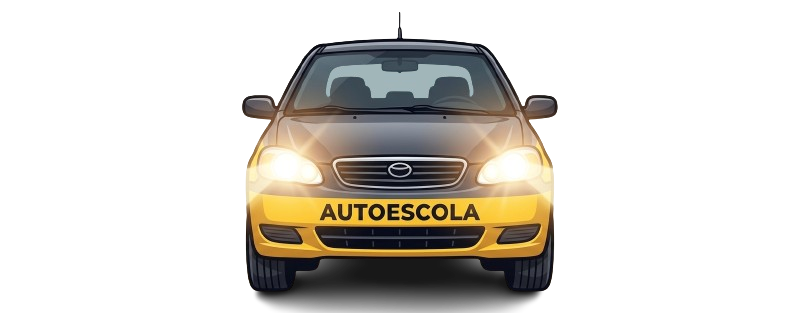

Missão CNH



O missão CNH é um jogo educativo desenvolvido para ajudar jogadores a aprender regras de trânsito de forma interativa e divertida.
O objetivo do jogo é permitir que o jogador pratique conhecimentos sobre trânsito enquanto enfrenta desafios dentro de um ambiente simulado.
O público-alvo do jogo Missão CNH são jovens e adultos que estão se preparando para a prova teórica da habilitação. Durante o processo de aprendizagem, esses usuários buscam formas mais dinâmicas e interativas de estudar, além da leitura tradicional. O jogo atende principalmente iniciantes, ajudando a reforçar o conhecimento sobre regras de trânsito de maneira prática e acessível.
No jogo Missão CNH, o jogador assume o papel de um motorista em aprendizado que precisa atravessar um percurso enfrentando situações do trânsito. Durante o caminho, surgem perguntas sobre regras de trânsito e obstáculos que exigem atenção e tomada de decisão. Para avançar, é necessário responder corretamente e evitar colisões. O objetivo é chegar ao final do trajeto com segurança, aplicando os conhecimentos adquiridos de forma prática e interativa.